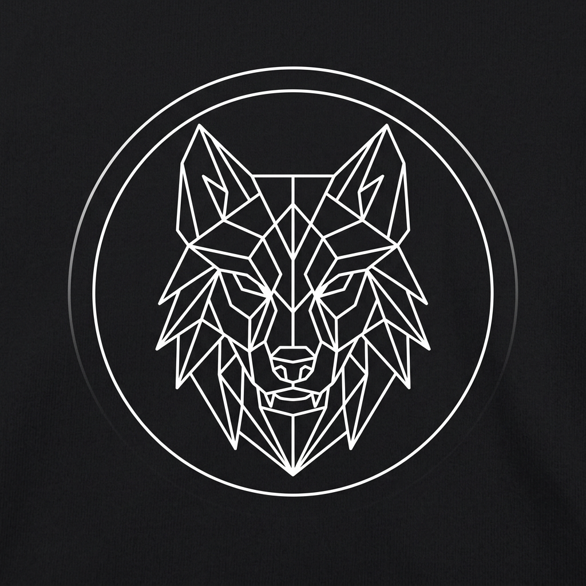
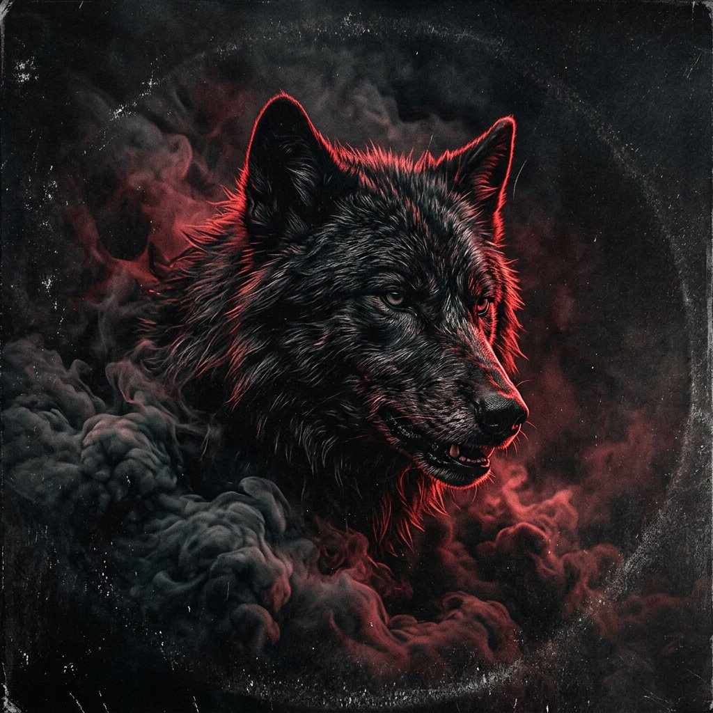
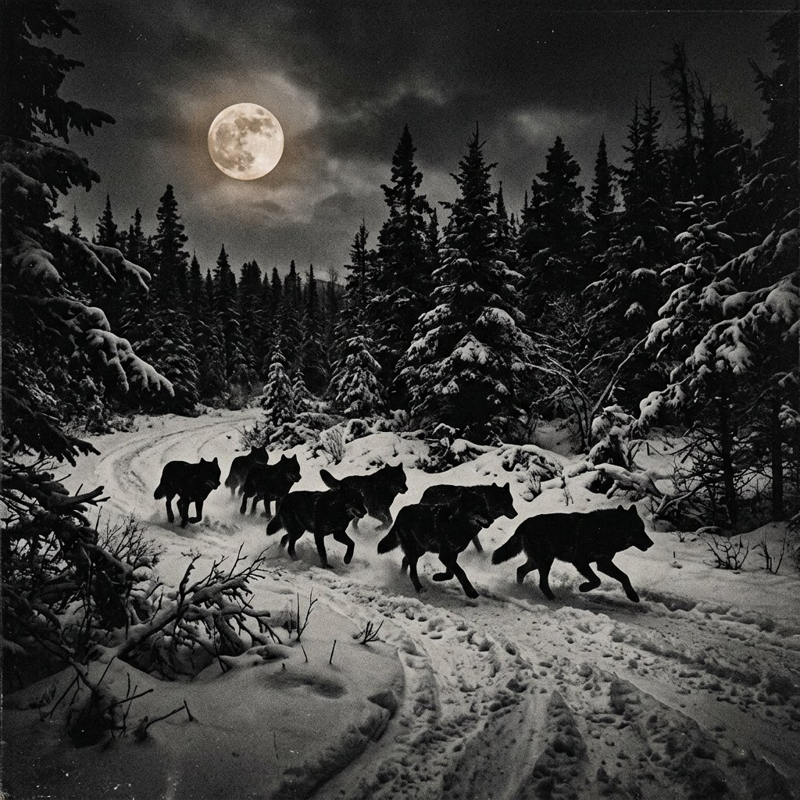

CZARNE WILKI PRAWDYWOJAN • OFICJALNA STRONA
Muzyka, która nie kłamie. Nowe utwory prosto z watahy — słuchaj, udostępniaj, wyj razem z nami.
Najnowsze premiery i cały katalog. Każdy nowy utwór ląduje tu automatycznie.
Wszystkie utwory zespołu, jeden po drugim, w pętli — 24/7.

Wojan to głos i pióro Czarnych Wilków Prawdy. Teksty rodzą się z obserwacji — z tego, co ludzie przemilczają. Muzyka jest ciężka, surowa i szczera: gitary, które gryzą, i refreny, które zostają.
Zespół gra materiał autorski, łącząc rockową energię z mroczną, wilczą estetyką. Nowe single publikowane są regularnie i od razu trafiają na tę stronę oraz do Wilczego Radia.

Booking, media, współpraca.